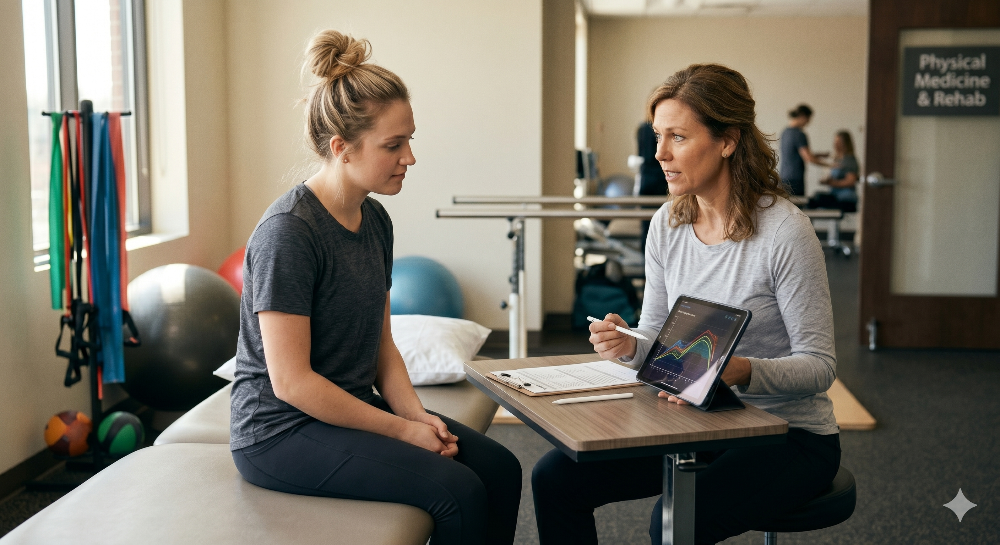
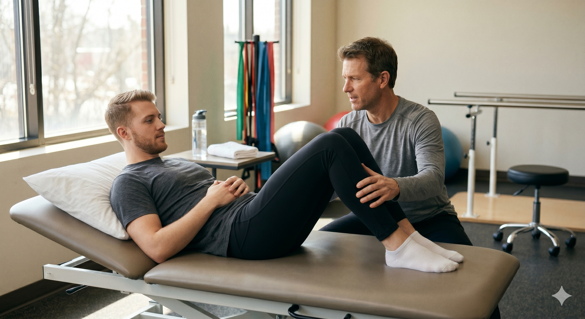
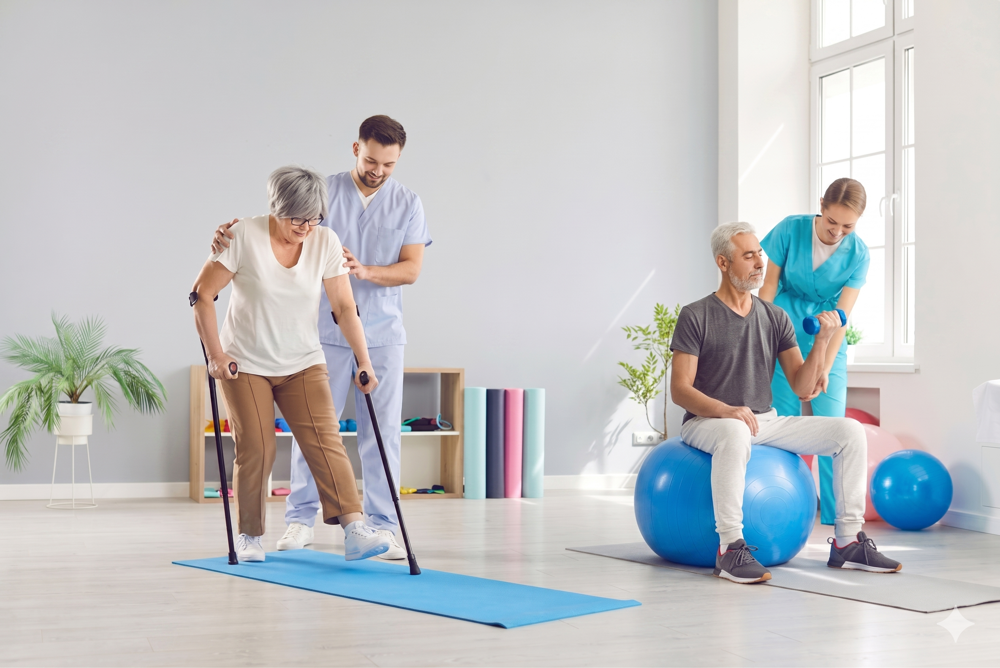
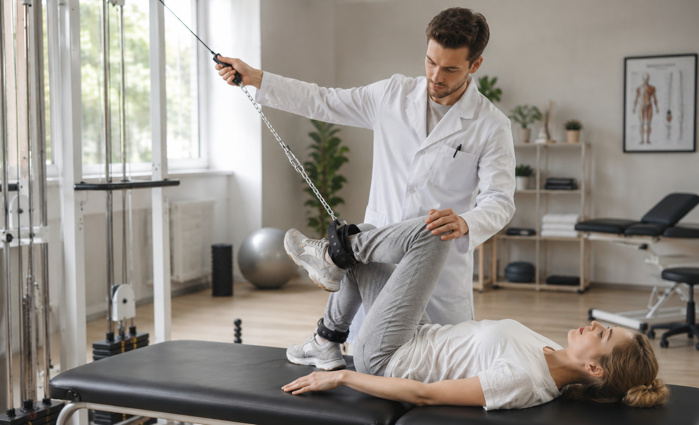
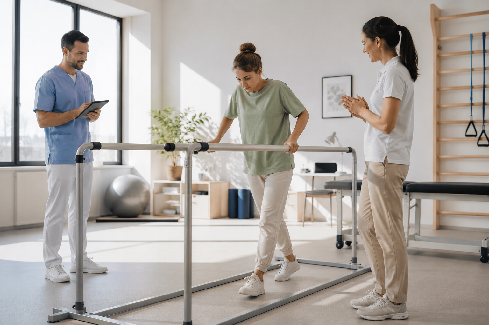
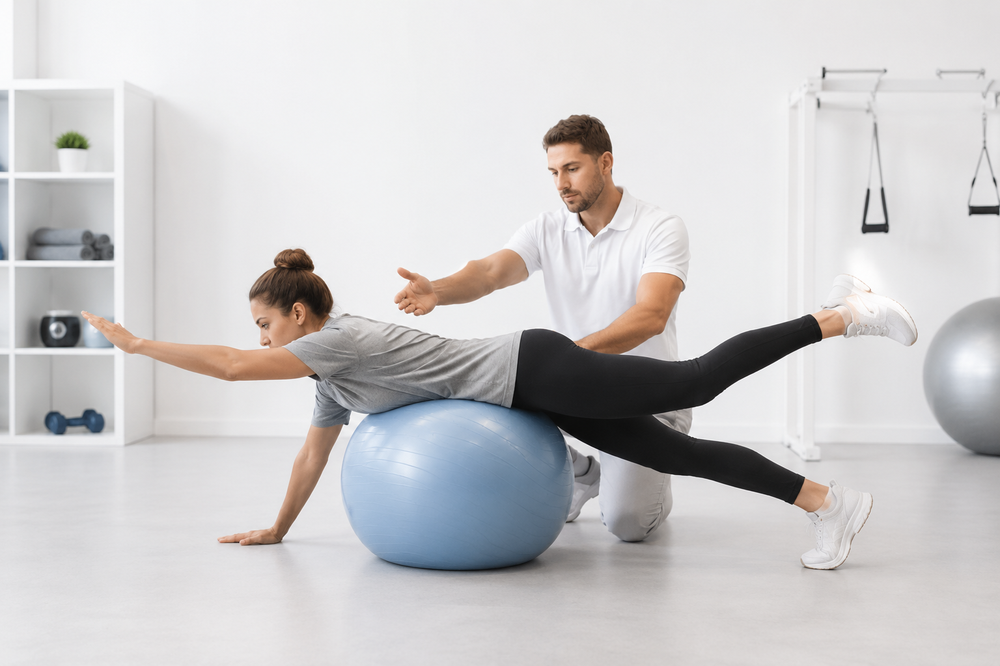

PROGRAM & WHY
단 한 사람만을 위한 과학적 분석, 더맞춤의 정밀 재활 솔루션입니다.
The 맞춤 프로세스 한눈에 보기
각 단계를 클릭하시면 하단의 상세 설명 영역으로 부드럽게 이동합니다.

병원 연계 재활

1:1 집중 재활

기능 최적화

일상 복귀

병원 연계 초기 재활 솔루션
수술 및 병원 치료 직후, 가장 안전하고 과학적인 회복의 첫걸음을 시작합니다.
수술 직후 혹은 병원 치료 직후 손상된 조직이 회복되는 가장 중요한 '골든 타임'입니다. 전문의의 진단 소견서 및 검사 결과를 정밀하게 분석하여 안전한 무통증 관절 가동 범위(ROM)를 확보하고 초기 근육 위축을 방지하기 위한 정밀 가동술과 기초 심부근 인지 훈련을 진행합니다.

1:1 맞춤 통증 원인 집중 재활
통증의 근본적인 원인이 되는 신체 불균형과 제한된 움직임을 정밀 수정합니다.
잘못된 보상 작용으로 무너진 골반과 척추 정렬을 바로잡는 핵심 단계입니다. 만성 통증을 유발하는 과긴장된 근막과 근육은 정밀 수기 요법으로 이완하고, 약화된 심부 코어 근육은 슬링 및 프리미엄 대기구를 활용하여 강화함으로써 통증 유발 패턴을 근본적으로 차단합니다.

전신 기능 최적화 & 신경근 제어
단순히 안 아픈 상태를 넘어 신체 고유의 퍼포먼스를 최상으로 끌어올립니다.
통증이 완화된 후 전신의 협응력과 고유수용감각(Proprioception)을 활성화하는 단계입니다. 다관절 복합 움직임 트레이닝을 통해 척추와 관절의 동적 안정성을 극대화하며, 일상생활이나 스포츠 활동 중 발생할 수 있는 2차 부상을 완벽히 예방할 수 있는 튼튼한 몸을 완성합니다.
재발 방지 및 액티브 라이프 일상 복귀
센터 밖의 일상에서도 완벽하게 건강함을 스스로 유지하는 졸업 단계입니다.
더맞춤 재활의 최종 목적지는 평생 지속 가능한 독립입니다. 수업 시간 외의 23시간 동안 유해한 자세 습관을 완벽하게 교정할 수 있도록 직업 환경별 인체공학적 피드백을 제공하며, 스스로 관리할 수 있는 개인 맞춤형 홈 트레이닝 솔루션을 빌드업하여 통증 없는 자유로운 삶을 지속하게 돕습니다.
오직 당신에게만 맞춘 특별함, 그 이상의 이유

데이터 기반의 철저한 맞춤 시스템
더맞춤은 직관이나 추측에 의존하지 않습니다. 전문 체형 측정 시스템 및 정밀 움직임 평가(FMS)를 거친 객관적인 데이터를 바탕으로 회원님의 근육량, 관절 각도, 보상 작용 패턴을 분석합니다. 모든 기록은 디지털 전용 차트에 실시간 누적되어 체계적으로 변화를 추적합니다.

보건복지부 면허 및 임상 경력 재활 전문가
단순 구호성 피트니스 강사가 아닙니다. 더맞춤의 강사진은 병원 임상 경력을 보유한 물리치료사 출신 및 국가 공인 메디컬 전문 자격을 갖춘 정예 전문가들로만 구성되어 있습니다. 해부학과 기능생체역학의 명확한 근거 위에 서서 안전의 한계를 넘지 않는 정교한 세션을 제공합니다.

센터 밖 23시간까지 설계하는 밀착 라이프 케어
주 2회 센터에서 운동하는 100분보다 중요한 것은 센터를 나선 뒤 보내는 23시간의 일상입니다. 매 수업 후 맞춤형 홈웍 가이드 피드백을 전달하여 스스로 나쁜 습관을 자각하고 교정하도록 실시간 피드백 창구를 운영, 재발 없는 완전한 건강 관리를 연계합니다.

온전히 내 몸에 몰입하는 프리미엄 프라이빗 룸
번잡하고 오픈된 피트니스 환경에서 벗어나 나만의 온전한 회복에 집중하세요. 더맞춤은 매 시간 소독과 방역 환기가 완벽히 유지되는 1:1 VIP 프라이빗 독립 룸 구조를 갖추고 있습니다. 다른 이의 시선 없이 최고급 메디컬 기구를 단독 사용하여 케어 효율을 배가시킵니다.
더맞춤 프로그램이 고객님을 향해 드리는 약속
“더 맞춤 프로그램은 오직 고객의 온전한 회복과 통증 없는 활기찬 일상 복귀만을 위해서 존재합니다.”
진심을 담은 1:1 진정성 밀착 케어
단순히 운동 기구 사용법을 알려주는 것을 넘어, 회원님의 오늘 컨디션, 통증 변화, 정서적 상태까지 온전히 교감하여 한 수업마다 온 진심을 다해 치료적 지도를 전합니다.
근거 중심의 가장 안전한 메디컬 재활
무작정 세게, 많이 하는 운동은 독이 됩니다. 임상 해부학적 데이터와 검증된 필라테스/재활 시퀀스만을 적용하여 관절과 척추에 무리 없이 가장 안전하게 기능을 회복시킵니다.
통증 없는 평생의 건강 파트너십 디자인
센터 안에서의 통증 완화를 넘어 평생 건강한 신체를 유지할 수 있도록 독립적인 자가 운동 루틴을 완성해 드립니다. 삶의 질을 극대화하는 평생 헬스 파트너가 되겠습니다.